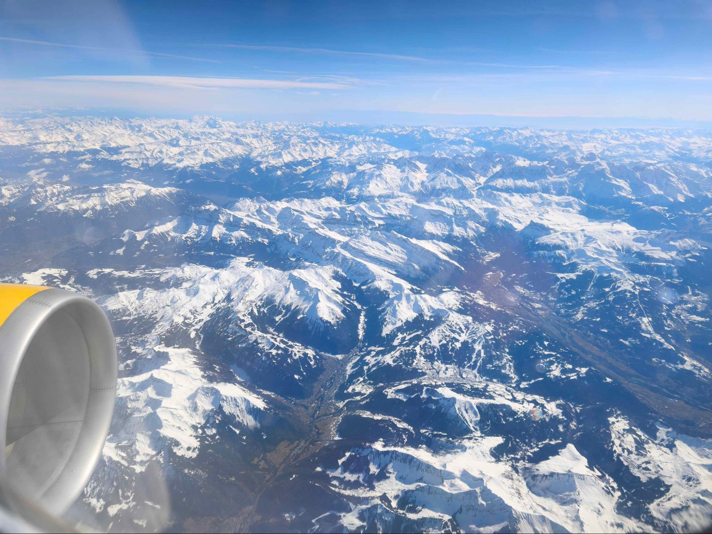
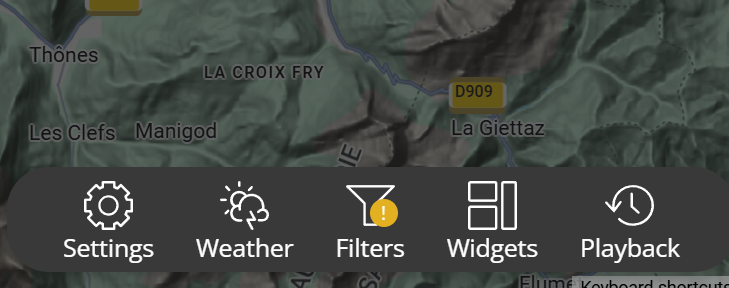
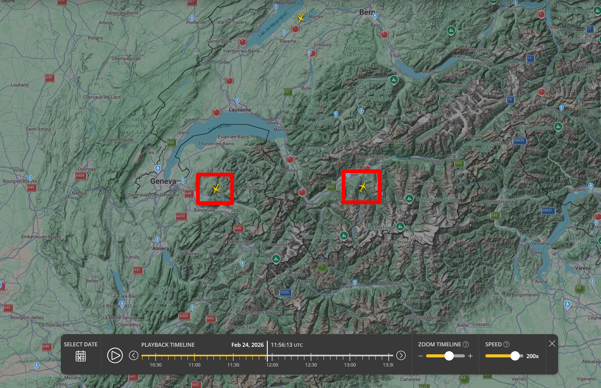
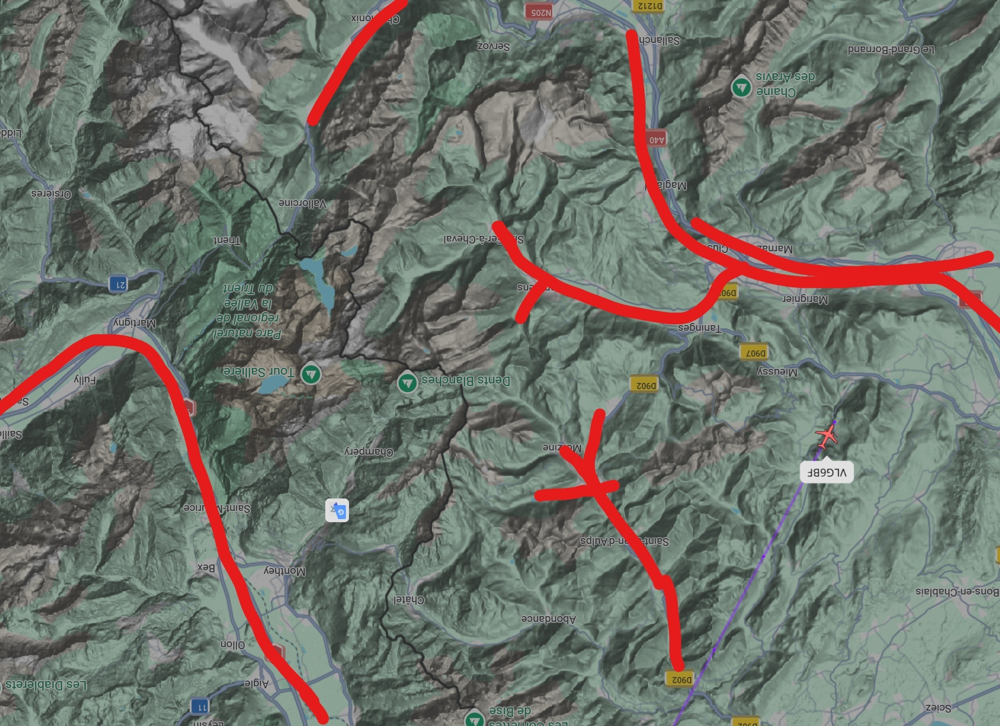
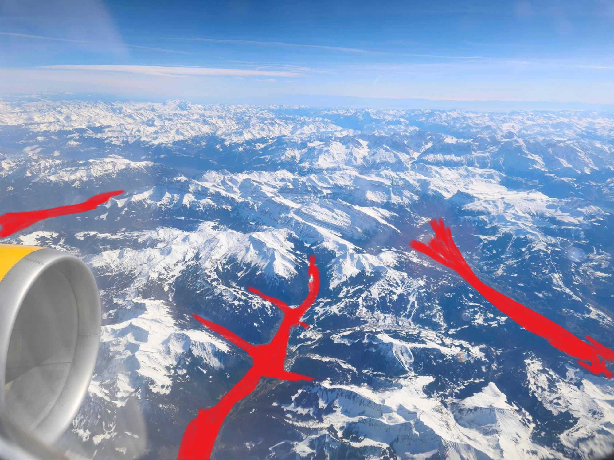

Field Note 004 Aviation OSINT
Window Seat
A jet engine over many snowy mountains.
The challenge showed a jet engine over a large mountain range. The photo details showed 12:55 on 24 February 2026 but the time zone field was empty. The goal was to find the exact tail number.

This writeup contains the solution. If you want to try the challenge yourself first, it is available at challenge.bellingcat.com.
The mountains
When I try to find a location my first step is to look at the ground. I ran the photo through an image search and the results were clear. It was the European Alps. It had snowy peaks specific valley shapes and the sharp looks you only see in those mountains.
The problem is that the Alps are huge. Comparing peaks with reference photos gave me too many different results. Every mountain looked a bit like the photo but none of them matched perfectly. There are just too many similar shapes across hundreds of kilometers of mountains. The land alone was not enough to find the exact flight.
I needed another way to solve the problem.
The yellow engines
So, I started looking at the plane. The photo is not just about the Alps. It also shows a plane and that plane has a specific design. The most unique detail was the engines. They were yellow, which is rare enough to really make the list of airlines smaller.
Image search and Google keywords were not helping much with yellow aircraft engines. Search engines struggle with this kind of specific visual detail because there are too many wrong results. So, I changed my tools and asked Gemini directly. I asked which airlines operate, in Europe, planes with yellow engines. It gave me four options:
- Condor is a German airline with a yellow tail and engines from a recent rebrand.
- Icelandair has at least one older plane with yellow engines.
- Vueling is a Spanish low cost airline with yellow details on the engines.
- DHL Aviation has yellow engines but I knew it was not DHL right away. DHL is a cargo airline and this photo was taken from a passenger seat.
I checked the other three with regular image searches. The engines all looked very similar at the photo resolution. So, I could not pick a clear winner just by looking at the design. But three good options was still a much smaller search area than looking at any airline in Europe.
Checking the map
With three possible airlines and a date the rest of the puzzle was a job for FlightRadar24. FR24 keeps past flight data and lets you filter by airline. So, I just needed to find out which Condor, Icelandair or Vueling flight was over the Alps at the time of the photo.
The time needed one more step. The photo details said 12:55 on 24 February 2026 but the time zone field was empty. The photo is clearly over Europe. So, the camera was probably set to local time. In late February that means CET which is Central European Time or UTC plus 1. That means 12:55 local time was 11:55 UTC and that was the exact moment I needed to check.
Tool FlightRadar24 Live and historical flight tracking with airline filters and playbackHow do I use FlightRadar24 filters and playback?
The FR24 playback feature lets you move the global flight map back to any past moment and the airline filter hides the extra noise so you only see the flights you want. Note that playback is a paid feature but the first seven days are free which is enough for one challenge.
- Open flightradar24.com sign in and zoom the map to the area you care about. In this case that means the Alps.
- Click the Filters button in the top menu.
- Open the Airline tab and add the airlines you want to see. Everything else will be hidden.
- From the same menu click Playback. Set the date and the time. For this challenge that is 24 February 2026 at 11:55 UTC.
- FR24 reloads the map at that exact moment with only the filtered airlines visible.

With the filter set to Condor, Icelandair, Vueling and the time set to 11:55 UTC on 24 February two possible planes were over the Alps. Either one could have been the right plane.

I could have just clicked one and guessed since I have unlimited guesses but that misses the point of the challenge. So, I opened the original photo again and drew lines over the most unique valleys. These were the deepest parts in the front. Then, I turned the satellite map view 180 degrees to match what you would see from a south facing window and I drew the same lines there.


The shapes lined up perfectly. Only one of the two FR24 planes was flying through that exact part of the mountains at 11:55 UTC. Clicking the plane on the map opened a side panel and the Registration field gave me the final answer.
A photo and a time stamp. The yellow engines narrowed the airlines down to three. The time narrowed the flights down to two. The valleys narrowed it down to just one.
Thanks to Galen and the Bellingcat team for this challenge. It was a great and fun puzzle. I am looking forward to the next one.